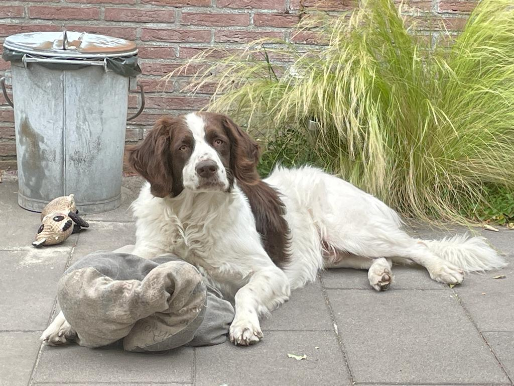
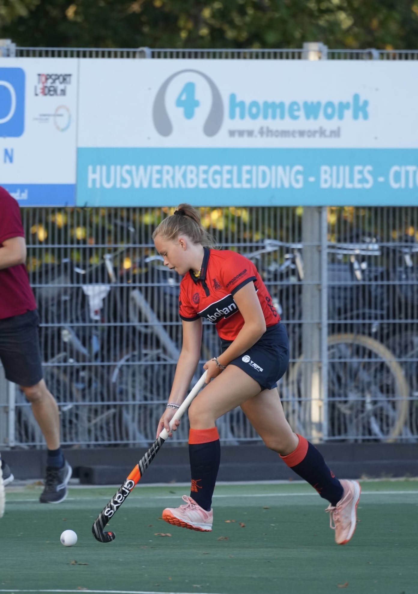
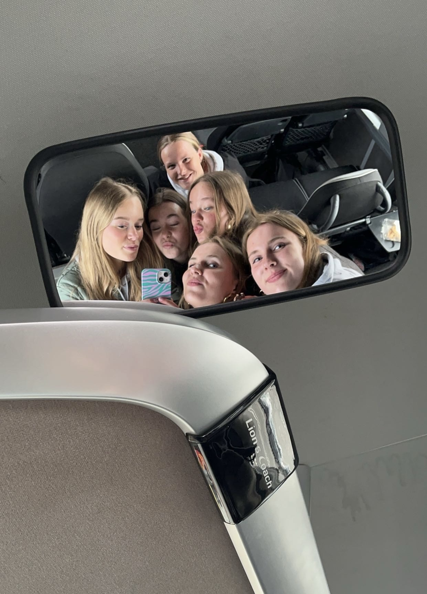
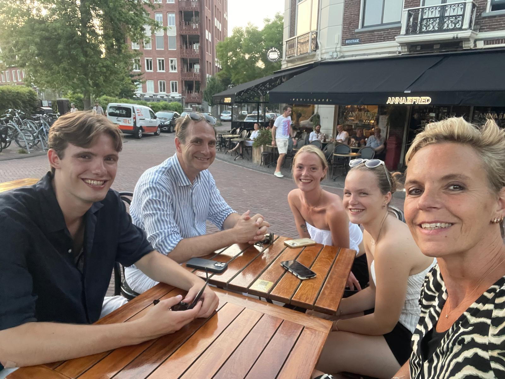

Hallo! Ik ben Julie en ik ben 16 jaar. Ik zit in VWO 5 op het Vlietland College in Voorschoten.
Ik zit al 12 jaar op hockey op LHC Roomburg en doe dit 3 keer per week. Ik train op dinsdag
en woensdag en op zaterdag heb ik een wedstrijd. Als ik niet hockey, vind ik het leuk
om alsnog te sporten. Naast sporten vind ik het leuk om met vriendinnen af te spreken.




Verder vind ik het leuk om gewoon thuis lekker op de bank te zitten en een film of serie te kijken.
Momenteel kijk ik vooral amerikaanse series, die vaak gaan over politiewerk of ziekenhuizen.
Ik woon in Leiden met mijn ouders en hond Sjaak. Ik heb ook een broer en zus maar die zijn
inmiddels allebei al uit huis en wonen in Rotterdam en het centrum van Leiden.
Ik werk sinds dit jaar bij Brasserie Park, een restaurant in Leiderdorp. Ik werk daar vaak op
zondagen en sta dan in de bediening.
Naast werken in de bediening, pas ik ook vaak op. Ik heb in totaal 11 oppaskinderen en 1 hond
die ik af en toe moet uitlaten. Later zou ik graag geneeskunde of recherchekunde willen doen,
omdat ik graag mensen help.